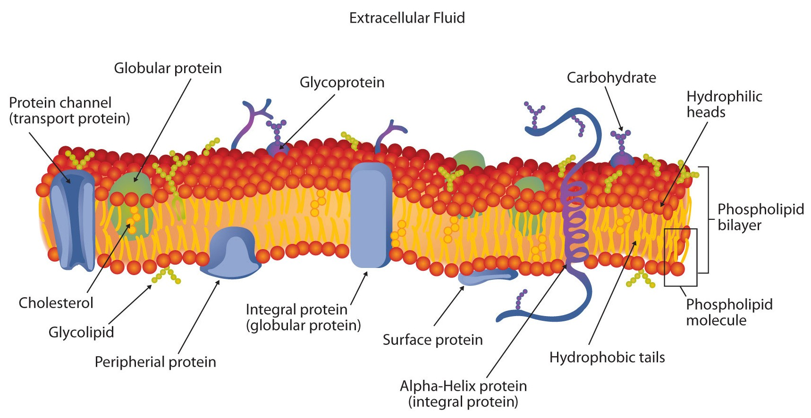
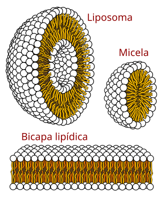

CEFRAM 1TDS "A"
Los lípidos cumplen una función estructural fundamental en las células, ya que son los principales componentes de las membranas celulares. La estructura básica de estas membranas está formada por una bicapa lipídica, compuesta principalmente por fosfolípidos, aunque también participan otros tipos de lípidos como el colesterol y los glucolípidos.
Los fosfolípidos tienen una estructura anfipática, es decir, poseen una parte hidrofílica (que atrae el agua) y una parte hidrofíbica (que la repele). Esta propiedad permite que se organicen espontáneamente en una bicapa, con las partes hidrofílicas orientadas hacia el interior y las hidrofílicas hacia el exterior. Esta disposición forma una barrera que separa el interior de la célula del entorno exterior.
|  |  |
Estabilidad y flexibilidad
El colesterol, otro lípido importante presente en la membrana, regula la rigidez y estabilidad de la bicapa, evitando que se vuelva demasiado rígida o demasiado fluida. Por su parte, los glucolípidos intervienen en procesos de reconocimiento celular y señalización.
La bicapa lipídica , y por tanto los lípidos que la componen, cumplen varias funciones estructurales esenciales:
1.Forman una barrera semipermeable que controla el paso de sustancias hacia dentro y fuera de la célula.
2.Mantienen la forma y la integridad de la célula, protegiéndola del entorno.
3.Permiten la fluidez de la membrana, lo que facilita el movimiento de proteínas, lípidos y otras moléculas dentro de la membrana.
4.Actúan como base estructural para proteínas de membrana, que intervienen en el transporte de sustancias, la comunicación celular y el reconocimiento entre células.